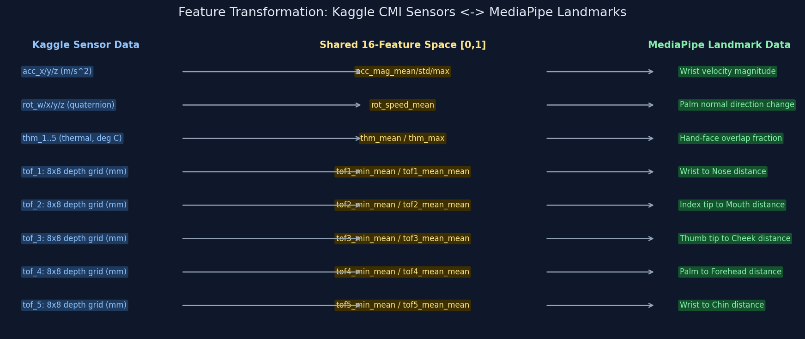
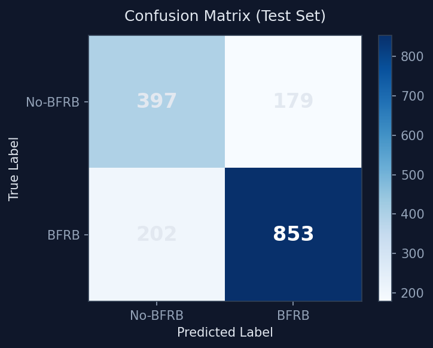
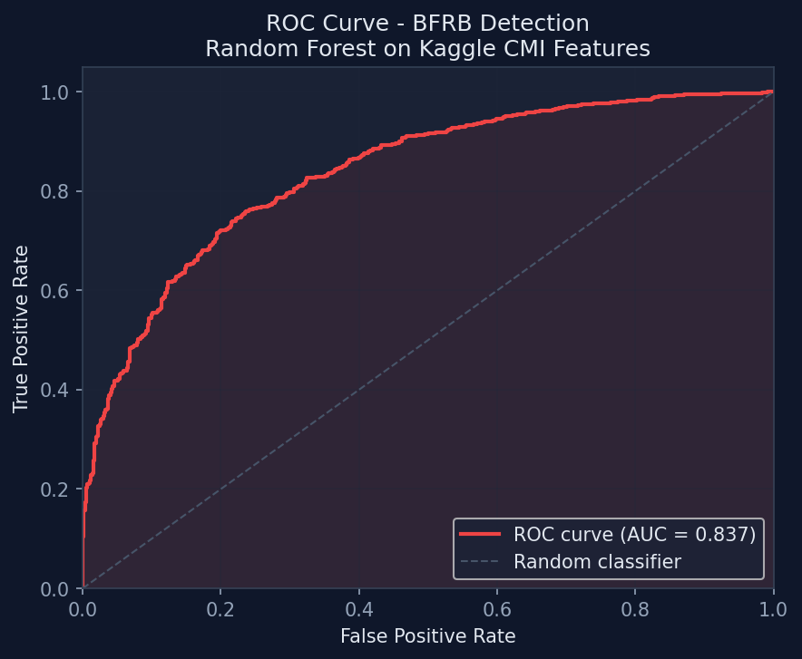
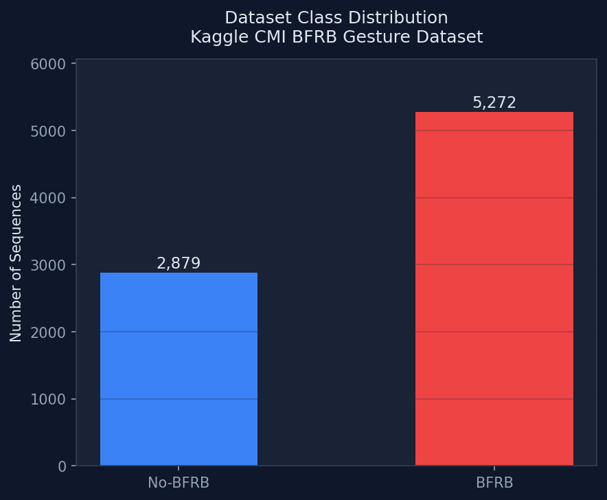
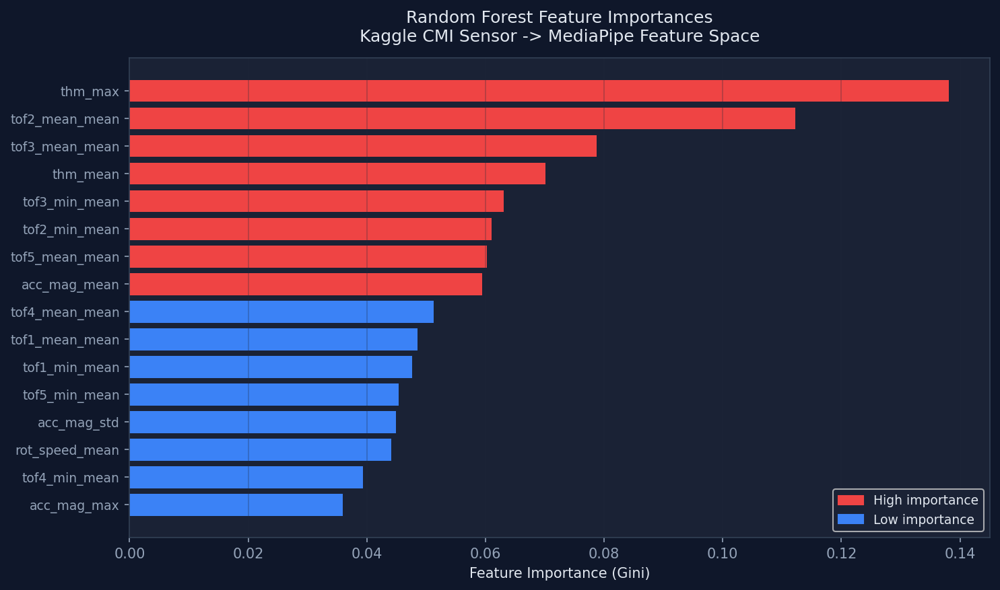
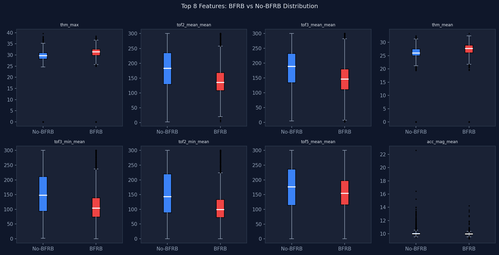

This report documents the first technical approach attempted for real-time BFRB (Body-Focused Repetitive Behavior) detection: training a machine learning model on the Kaggle Child Mind Institute (CMI) Detect Behavior with Sensor Data dataset, then applying that model to live MediaPipe webcam data.
The approach achieved 77% accuracy and AUC-ROC 0.837 on the Kaggle test set, but produced excessive false positives in real webcam deployment due to a fundamental domain gap between the two data sources. This report explains exactly what was built, the results obtained, and the technical reasons this approach is insufficient for a production system.
The CMI Detect Behavior with Sensor Data competition dataset was collected using a custom wrist-worn device called Helios. Subjects wore the bracelet while performing labeled BFRB gestures (e.g., nail biting, hair pulling, face touching) and control activities (e.g., texting, writing, waving).
| Property | Value |
|---|---|
| Total rows (timesteps) | 574,945 |
| Total gesture sequences | 8,151 |
| BFRB sequences | 5,272 (64.7%) |
| Non-BFRB sequences | 2,879 (35.3%) |
| Total columns per row | 341 |
| Sensor sampling rate | ~10 Hz (inferred) |
| Column(s) | Sensor Type | Units | Description |
|---|---|---|---|
acc_x, acc_y, acc_z | Accelerometer (IMU) | m/s² | 3-axis wrist acceleration |
rot_w, rot_x, rot_y, rot_z | Quaternion (IMU) | dimensionless | Wrist 3D orientation |
thm_1 .. thm_5 | Thermal (5 sensors) | °C | Skin contact warmth detection |
tof_1_v0 .. tof_5_v63 | Time-of-Flight (5 sensors, 8×8 grid) | mm | Spatial depth map around wrist (320 values total) |
| Gesture | Category | Sequences |
|---|---|---|
| Forehead — pull hairline | BFRB | 640 |
| Neck — pinch skin | BFRB | 640 |
| Text on phone | No-BFRB | 640 |
| Neck — scratch | No-BFRB | 640 |
| Forehead — scratch | BFRB | 640 |
| Eyelash — pull hair | BFRB | 640 |
| Above ear — pull hair | BFRB | 638 |
| Eyebrow — pull hair | BFRB | 638 |
| Cheek — pinch skin | BFRB | 637 |
| Wave hello | No-BFRB | 478 |
The central hypothesis was that both the Kaggle wrist sensor and MediaPipe landmarks measure the same underlying physical reality — a hand performing a gesture — through different sensing modalities. If we could map both into a common semantic feature space, a model trained on Kaggle data could classify MediaPipe data.

| # | Feature Name | Kaggle Source | MediaPipe Analog |
|---|---|---|---|
| 1 | acc_mag_mean | Mean of sqrt(acc_x² + acc_y² + acc_z²) over sequence | Mean wrist landmark velocity per frame |
| 2 | acc_mag_std | Std of acceleration magnitude | Std of wrist velocity |
| 3 | acc_mag_max | Max acceleration magnitude | Max wrist velocity |
| 4 | rot_speed_mean | Mean frame-to-frame quaternion change magnitude | Mean palm normal vector direction change |
| 5 | thm_mean | Mean of all 5 thermal sensors (°C) | Mean fraction of fingertips within 0.18 radius of nose |
| 6 | thm_max | Max thermal reading (°C) | Max hand-face overlap fraction per frame |
| 7–8 | tof1_min/mean_mean | Avg of per-row min/mean of ToF sensor 1 8×8 grid (mm) | Wrist-to-nose Euclidean distance (normalized coords) |
| 9–10 | tof2_min/mean_mean | ToF sensor 2 | Index fingertip-to-mouth distance |
| 11–12 | tof3_min/mean_mean | ToF sensor 3 | Thumb tip-to-cheek distance |
| 13–14 | tof4_min/mean_mean | ToF sensor 4 | Palm center-to-forehead distance |
| 15–16 | tof5_min/mean_mean | ToF sensor 5 | Wrist-to-chin distance |
def extract_features(group: pd.DataFrame) -> dict: # 1-3: Accelerometer magnitude statistics acc_mag = np.sqrt(group["acc_x"]**2 + group["acc_y"]**2 + group["acc_z"]**2) feats["acc_mag_mean"] = acc_mag.mean() feats["acc_mag_std"] = acc_mag.std() feats["acc_mag_max"] = acc_mag.max() # 4: Quaternion frame-to-frame change = rotation speed rot = group[["rot_w","rot_x","rot_y","rot_z"]].values diff = np.diff(rot, axis=0) feats["rot_speed_mean"] = np.sqrt((diff**2).sum(axis=1)).mean() # 5-6: Thermal sensors (skin contact / warmth) thm = group[[c for c in group.columns if c.startswith("thm_")]].values feats["thm_mean"] = thm.mean() feats["thm_max"] = thm.max() # 7-16: ToF 8x8 depth grids (per-row min + mean, averaged over sequence) for s in range(1, 6): cols = [f"tof_{s}_v{i}" for i in range(64)] mat = group[cols].values.astype(float) mat[mat < 0] = np.nan # -1 = out of range row_mins = np.nanmin(mat, axis=1) # closest object per timestep row_means = np.nanmean(mat, axis=1) # avg proximity per timestep feats[f"tof{s}_min_mean"] = row_mins.mean() feats[f"tof{s}_mean_mean"] = row_means.mean()
All 16 features were normalized to [0, 1] using MinMaxScaler fitted on the
Kaggle training data. The MediaPipe features were manually mapped to [0, 1] by dividing
by their expected maximum values (velocity / 0.15, distances / 0.8, overlap fraction
already in [0,1]).
| Class | Precision | Recall | F1-Score | Support |
|---|---|---|---|---|
| No-BFRB | 0.66 | 0.69 | 0.68 | 576 |
| BFRB | 0.83 | 0.81 | 0.82 | 1,055 |
| Accuracy | 0.77 | 1,631 |





thm_max was the single most important feature (13.8% importance). The
Kaggle thermal sensors measure actual skin temperature (~28–40°C) — they detect
sustained physical skin contact, which is a true signal of hair pulling or
skin picking. The MediaPipe analog I used was "fraction of fingertips within 0.18
normalized radius of the nose landmark."
This analog fires incorrectly because:
Kaggle ToF readings range from ~50–300mm. After MinMaxScaler: a "touching face" reading (~60mm) normalizes to ~0.04. MediaPipe landmark distances range from 0.0 to ~0.8 (normalized image coordinates). A "touching face" landmark distance (~0.03) normalizes to ~0.04 too — so far so good. But the variance around those values is completely different:
The RF's decision boundary was set at a threshold in Kaggle's normalized space. That threshold does not correspond to the same physical event in MediaPipe's space.
The Kaggle device measures distance outward from the wrist in physical space. MediaPipe measures distances in 2D normalized image coordinates. A hand at the side of the frame vs. the center will have very different landmark distances to the face, even if physically the same proximity. Camera angle, subject position, and frame cropping all affect MediaPipe distances in ways that have no analog in wrist sensor data.
The Kaggle features were computed per-sequence (aggregated statistics over an entire gesture). The MediaPipe system used a 30-frame rolling window (~1 second). This means:
The Random Forest was trained entirely on wrist sensor data. It has never seen a single frame of camera-derived landmark data. Transfer learning without fine-tuning on target domain data is expected to underperform. The 77% accuracy metric is only valid for the Kaggle test set; real-world webcam accuracy was not measured but observed to be poor.
| Component | Status | Notes |
|---|---|---|
| Kaggle data loading & parsing | WORKED | 574,945 rows, 341 columns processed correctly |
| ToF 8x8 grid summarization | WORKED | Min/mean per row, averaged across sequence |
| Random Forest on Kaggle features | WORKED | 77% accuracy, AUC 0.837 on Kaggle test set |
| Accelerometer → velocity mapping | REASONABLE | Semantic similarity; scale different but pattern preserved |
| Quaternion → palm normal mapping | REASONABLE | Both measure rotation rate; similar semantic meaning |
| ToF proximity → landmark distance mapping | DOMAIN GAP | Different scales; normalization does not fully bridge |
| Thermal → face overlap mapping | FAILED | Semantically wrong; thermal = skin contact, overlap = spatial proximity |
| Model generalization to MediaPipe | FAILED | False positive rate too high for usable detection |
| No temporal/dwell modeling | MISSING | Critical for BFRB vs. incidental touch discrimination |
The Kaggle CMI → MediaPipe transformation is a valid research exploration but is not a viable production approach for this web application. The domain gap between physical sensor measurements and image-coordinate landmark data is fundamentally too large to bridge with simple normalization. The model achieved solid performance on sensor data (AUC 0.837) but cannot generalize to camera data without retraining on actual webcam-derived labeled examples.
The correct approach — supported by published research and existing BFRB apps (BFRBye, Hands Off, StopBitingNails) — is a rule-based detector with adaptive thresholds, temporal dwell-time modeling, and velocity filtering applied directly to MediaPipe landmarks, with no cross-domain model transfer.
| File | Description |
|---|---|
transform_and_train.py | Full Kaggle feature extraction + RF training pipeline |
model/bfrb_model.pkl | Trained Random Forest (200 trees, balanced) |
model/scaler.pkl | MinMaxScaler fitted on Kaggle features |
model/feature_meta.json | Feature names, descriptions, normalization bounds |
templates/index_kaggle_v1.html | Original web app using Kaggle-trained model |
report_assets/*.png | Training charts: ROC, confusion matrix, feature importances, etc. |